4.3.8 Very special angles
- ●Here you find AC is exactly on AB ; then the angle is \(0 ^{\circ}\) . It is called the Zero angle.
- ●If ‘C’ is exactly on the opposite side of ‘B’, with vertex ‘A’ in the middle. Then the
angle is \(180 ^{\circ}\) . It is called the Straight angle.
4.3.9 Special pairs of angles
Two angles are complementary to each other if their sum is \(90 ^{\circ}\) [See Fig. 4.28(i)]
Two angles are supplementary to each other if their sum is \(180 ^{\circ}\) [See Fig. 4.28(ii)]
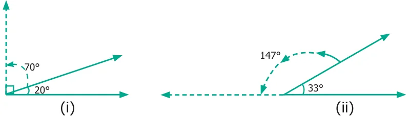
In the above figures, \(20 ^{\circ}\) and \(70 ^{\circ}\) are complementary angles and \(147 ^{\circ}\) and \(33 ^{\circ}\) are supplementary angles. But \(35 ^{\circ}\) and \(75 ^{\circ}\) are neither complementary nor supplementary.

- 1.Use any number of the given dots to make different angles.

- 2.Name the vertex and arms that form each angle.
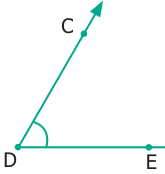
Vertex _____________ Vertex _____________ Arms _____________ Arms _____________
- 3.Pick out the Right angles from the given figures.
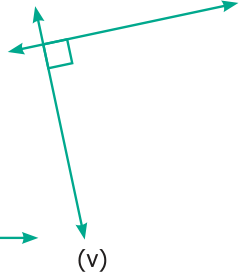
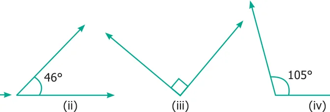
- 4.Pick out the Acute angles from the given figures.
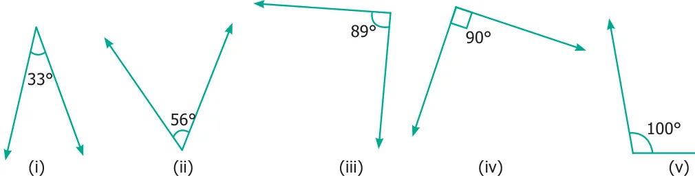
- 5.Pick out the Obtuse angles from the given figures.
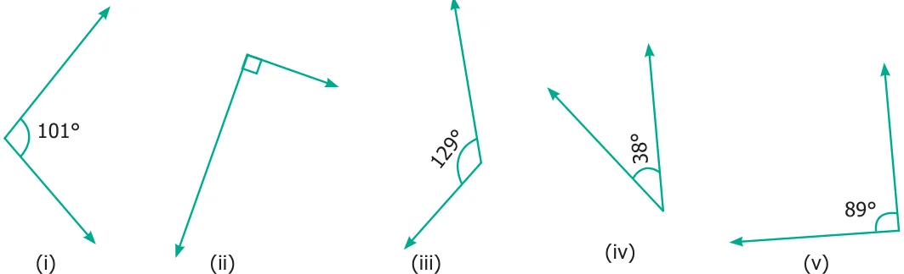
- 6.Name the angle in each figure given below in all the possible ways.
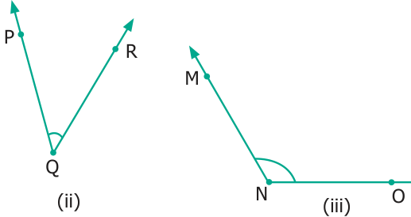
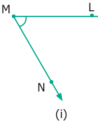
- 7.Say True or False.
- (i)\(20 ^{\circ}\) and \(70 ^{\circ}\) are complementary.
- (ii)\(88 ^{\circ}\) and \(12 ^{\circ}\) are complementary.
- (iii)\(80 ^{\circ}\) and \(180 ^{\circ}\) are supplementary.
- (iv)\(0 ^{\circ}\) and \(180 ^{\circ}\) are supplementary.
- 8.Draw and label each of the angles.
- (i)\(\angle NAS = 90 ^{\circ}\) (ii) \(\angle BIG = 35 ^{\circ}\) (iii) \(\angle SMC = 145 ^{\circ}\) (iv) \(\angle ABC = 180 ^{\circ}\)
- 9.Identify the types of angles shown by the hands of the given clock.
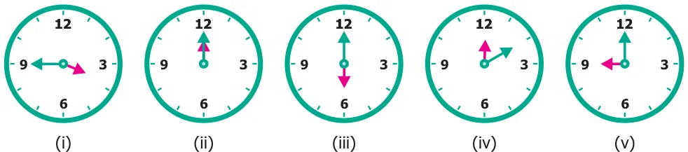
- 10.Find the complementary angle of
- (i)\(30 ^{\circ}\) (ii) \(26 ^{\circ}\) (iii) \(85 ^{\circ}\) (iv) \(0 ^{\circ}\) (v) \(90 ^{\circ}\)
- 11.Find the supplementary angle of
- (i)\(70 ^{\circ}\) (ii) \(35 ^{\circ}\) (iii) \(165 ^{\circ}\) (iv) \(90 ^{\circ}\) (v) \(0 ^{\circ}\)
- 12.Find the supplementary / complementary angles in each case.
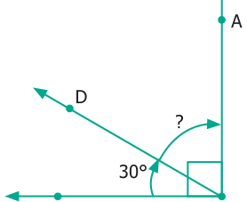
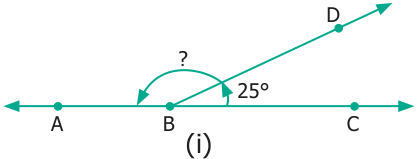
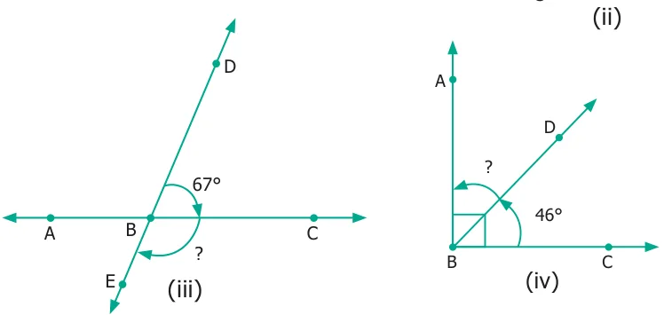
Objective Type Questions
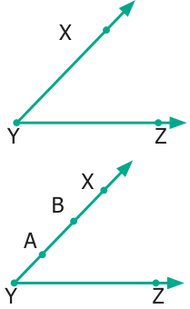
- 13.In this Figure, which is not the correct way of naming an angle?
- (a)\(\angle Y\) (b) \(\angle ZXY\) (c) \(\angle ZYX\) (d) \(\angle XYZ\)
- 14.In this Figure, \(\angle AYZ = 45 ^{\circ}\) . If point ‘A’ is shifted to point ‘B’
along the ray, then the measure of \(\angle BYZ\) is ___________.
- (a)more than \(45 ^{\circ}\) (b) \(45 ^{\circ}\) (c) Less than \(45 ^{\circ}\) (d) \(90 ^{\circ}\)